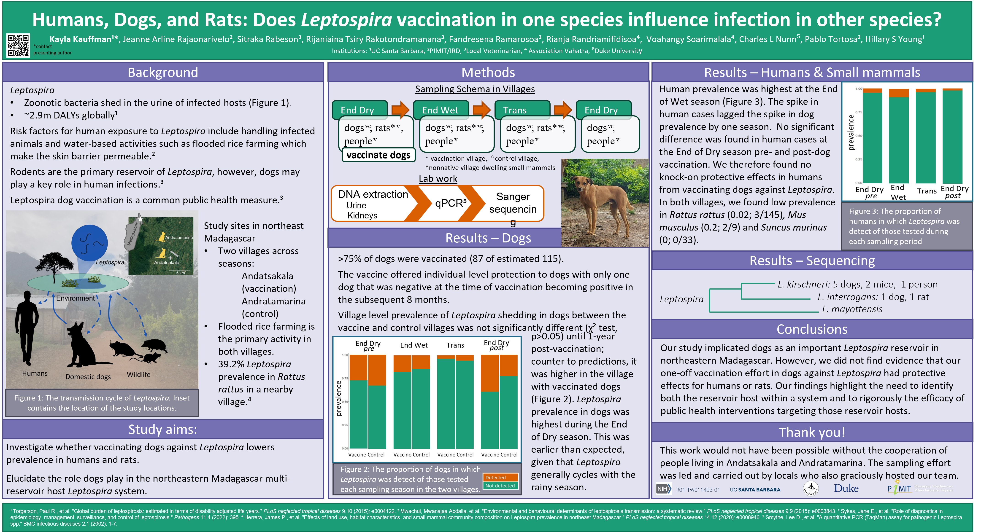

Publications
ESA poster 2023

Published works
2023
MV Evans, T Ramiadantsoa, K Kauffman, J Moody, C Nunn, JY Rabezara, P Raharimalala, TM Randriamoria, V Soarimalala, G Titcomb, A Garchitorena, and B Roche. 2023. Socio-demographic variables can guide prioritized testing strategies for epidemic control in resource-limited contexts. Journal of Infectious Diseases. https://doi.org/10.1093/infdis/jiad076
2022
Kauffman Kayla, Werner Courtney S., Titcomb Georgia, Pender Michelle, Rabezara Jean Yves, Herrera James P., Shapiro Julie Teresa, Solis Alma, Soarimalala Voahangy, Tortosa Pablo, Kramer Randall, Moody James, Mucha Peter J. and Nunn Charles. 2022. Comparing transmission potential networks based on social network surveys, close contacts and environmental overlap in rural Madagascar. J. R. Soc. Interface. 19:20210690. 20210690. http://doi.org/10.1098/rsif.2021.0690
2021
Kayla M. Kauffman, Todd E. Cornish, Kevin Monteith, Brant A. Schumaker, Tayler LaSharr, Katey Huggler, and Myrna Miller. Detection of Deer atadenovirus A DNA in dam and offspring pairs of Rocky Mountain mule deer (Odocoileus hemionus hemionus) and Rocky Mountain elk (Cervus canadensis nelson). Journal of Wildlife Diseases, 57(2), 2021. https://doi.org/10.7589/JWD-D-20-00034
2019
Kayla M. Kauffman. Expanding the knowledge of the epidemiology of Adenovirus Hemorrhagic Disease: Deer atadenovirus A genotype distribution in Western North America and dam to offspring transmission (Master’s Thesis). University of Wyoming. Presented 7 July 2019. Published 16 Aug 2019. Proquest (22620093).
2018
White M, Kauffman K, Lewis J, Miller R. 2018. Wild pigs breach farm fence through harvest time in southern San Joaquin Valley. Calif Agr 72(2):120-126. https://doi.org/10.3733/ca.2018a0017